地政学
ヴィクトリアはインド洋の小国セーシェルの首都で、港、官庁、外交、海洋保護、観光政策が集まる。アフリカ、アジア、中東、欧州を結ぶ航路の中で、小さな島国が主権を交渉する場でもある都市だ。外交も映す場だ。
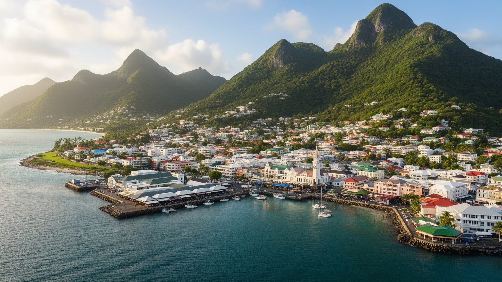
🇸🇨 セーシェル / マヘ島 / World City Atlas
マヘ島北東岸の小さな首都。港湾、官庁、市場、時計塔、宗教施設、観光、マグロ加工、島々への船と空路、熱帯の海洋環境が近い距離で重なるインド洋の都市です。
都市の骨格
ヴィクトリアは大都市ではないが、セーシェルの国家運営と観光経済を受け止める結節点です。山腹の住宅地、港、官庁街、市場、宗教施設、空港への道が短い距離で結びつきます。
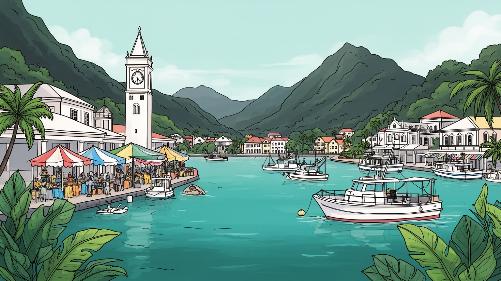
ヴィクトリアはインド洋の小国セーシェルの首都で、港、官庁、外交、海洋保護、観光政策が集まる。アフリカ、アジア、中東、欧州を結ぶ航路の中で、小さな島国が主権を交渉する場でもある都市だ。外交も映す場だ。
観光、港湾、行政、漁業、マグロ加工、小売、建設、金融サービスが雇用を作る。リゾートの華やかさの背後で、船員、加工場、清掃、店員、公務員、運転手が島の経済を日々支えている街だ。賃金と技能も課題です。
クレオール語、英語、仏語、カトリック、英国国教会、ヒンドゥー寺院、モスク、華人とインド系商人の記憶が重なる。音楽、食、家族行事、教会の暦が、観光地の外側で都市の生活を形づくる。街の暦であり続ける。
旅行者は時計塔、市場、植物園、港、近郊ビーチへ向かうが、住民は住宅費、輸入物価、交通、廃棄物、若者の仕事、海面上昇と向き合う。美しい島都は、生活費の高い都市でもある場所だ。課題も映す都市でもある。
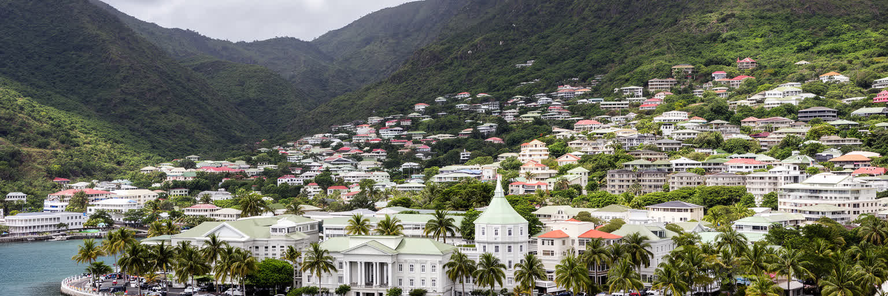
ヴィクトリアは人口規模だけなら小さな港町に見えるが、セーシェルという海洋国家の意思決定が集まる首都である。大統領府、官庁、裁判所、議会、港湾、金融機関、学校、市場が、マヘ島北東岸の限られた平地に近接し、山腹の住宅地と海に挟まれている。国土は多くの島へ散り、排他的経済水域は広いため、首都の役割は陸上の行政だけでは終わらない。漁業権、海洋保護、観光投資、気候外交、海賊対策、外資規制、島々への交通をどう調整するかが、ヴィクトリアの政治に集まる。小さな官庁街で交わされる判断は、遠い環礁、リゾート島、マグロ船、港湾労働、国際会議まで届く。首都の狭さは、政策担当者、商人、宗教者、旅行業者、住民の距離を近くする一方、住宅、駐車、公共空間の余裕を奪いやすい。ヴィクトリアを読むには、建物の高さではなく、広い海域を小さな市街地がどう代表しているかを見る必要がある。港へ入る船、官庁へ向かう人、時計塔の周りを歩く観光客、学校へ通う子どもが同じ道路を使うこと自体が、島国首都の現実である。国家の顔と生活の街が分離しきれない点に、この都市の密度がある。さらに国際機関、援助、民間投資、環境団体が首都で接触するため、政策は国内向けの手続きであると同時に、外部世界へ説明する言葉にもなる。小さな首都ほど、透明性と信頼が外交資産になる。
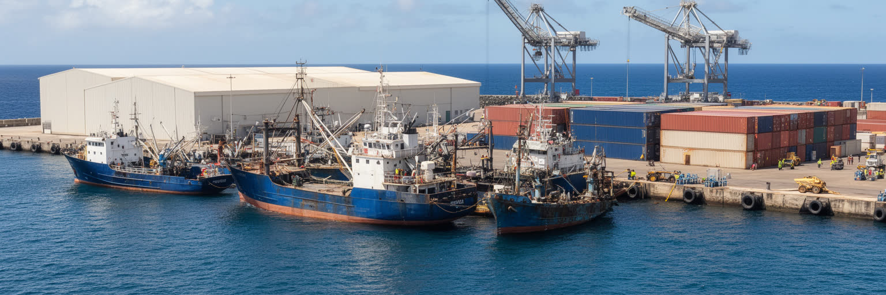
ヴィクトリア港は観光客の玄関であるだけでなく、セーシェル経済の実務を担う場所である。輸入食料、燃料、建材、車、日用品が港を通り、マグロ漁船、加工施設、冷蔵物流、コンテナ、税関、船舶サービスが首都の雇用を作る。島国では港の効率が物価に直結し、岸壁の混雑や天候の遅れはスーパーの棚、建設費、ホテルの仕入れにも響く。マグロ産業は外貨を稼ぐ重要な柱だが、漁場管理、労働条件、国際価格、燃料費、環境規制に左右される。港の周辺で働く人々は、観光パンフレットには出にくいが、島の暮らしを支える基盤である。荷役、冷凍、整備、清掃、警備、通関、事務、加工場のラインは、海辺の景観を経済へ変える作業だ。大型リゾートや金融サービスだけを見れば、セーシェルは高所得の観光国に見える。しかしヴィクトリアの港を見れば、輸入依存、食料安全保障、漁業資源、労働移民、廃棄物、海洋汚染が同時に現れる。港の拡張は必要でも、海岸環境や市街地交通への負担を避けられない。港湾政策は、成長戦略であると同時に、住民の生活費と海の持続性を左右する都市政策である。港で働く人の技能訓練、安全装備、休憩、通勤手段も重要だ。外貨を稼ぐ産業ほど、現場の健康と地域への還元を見なければ、都市の豊かさは数字だけで終わってしまう。この視点が、港を都市の中心として読む鍵になる。
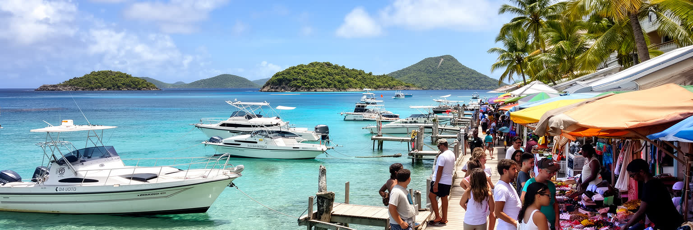
ヴィクトリア観光は、白砂のビーチだけではない。時計塔、サー・セルウィン・セルウィン＝クラーク市場、植物園、歴史博物館、教会、港の桟橋、近郊のビーチ、モーン・セーシェロワ山地への入口が、首都の短い散策範囲にある。多くの旅行者はマヘ島のリゾートへ向かう途中でヴィクトリアに立ち寄り、そこからプララン、ラディーグ、海洋公園、ダイビング、クルーズへ移る。観光は外貨と雇用をもたらすが、同時に土地価格、輸入食材、交通、廃棄物、水需要を押し上げる。ホテル、ガイド、運転手、土産物店、レストラン、清掃、空港、港湾、警備の仕事は観光の波に左右され、感染症や航空便の変動、気候災害で収入が急に揺れる。ヴィクトリアを歩く楽しさは、首都の生活と観光経済が同じ市場や道路で交差する点にある。だが観光客向けの価格や短時間消費だけが強くなると、住民の買い物や小さな店は圧迫される。よい観光は、旅行者が島の美しさを楽しむだけでなく、水、道路、港、文化、自然保護へ適切に還元される仕組みを持つ。首都はその配分を見える場所で調整する舞台である。短い寄港や日帰り観光では、消費が一部の業者に偏りやすい。地元ガイド、市場の商人、公共交通、文化施設へ利益が広がる設計があって初めて、観光は都市全体の力になる。滞在時間を延ばす工夫も、地域への還元を広げる。
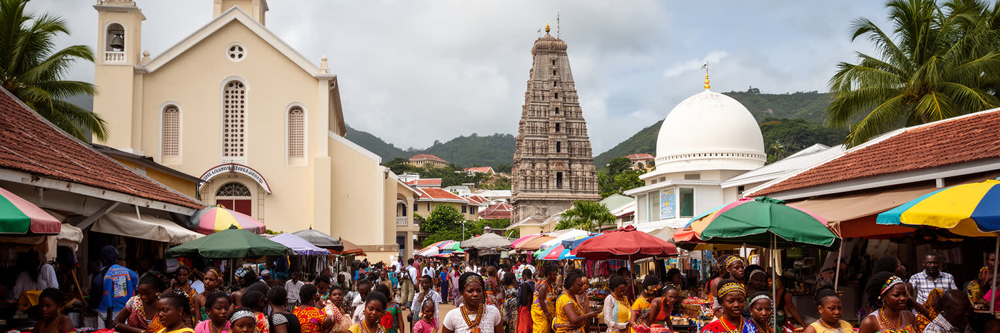
ヴィクトリアの文化は、アフリカ系、欧州系、インド系、中国系、中東系の移動がインド洋で重なってできたクレオール社会の表情を持つ。セーシェル・クレオール語は日常の言葉であり、英語と仏語は行政、教育、観光、国際関係をつなぐ。カトリック教会、英国国教会、ヒンドゥー寺院、モスク、福音派教会は近い距離にあり、宗教は礼拝だけでなく、学校、家族行事、葬儀、慈善、音楽、祝祭を通じて都市生活を支える。市場の魚、香辛料、カレー、グリル、果物、クレオール音楽、ダンスは観光資源にもなるが、まず住民の記憶と家庭の味である。多文化性は華やかな混合として語られやすいが、植民地支配、奴隷制、プランテーション、移民労働、階層差の歴史も含んでいる。ヴィクトリアの宗教施設や市場を訪ねる時は、色彩や音だけでなく、家族がどのように祖先を語り、言語を使い分け、共同体を保っているかを見る必要がある。島の小ささは人間関係を濃くし、評判や親族関係も生活を左右する。クレオール文化は観光の飾りではなく、政治参加、教育、食、信仰、近所づきあいを動かす都市の土台である。祭りや音楽が外向きに紹介される時も、地域の語り手と若い世代が意味を受け継げることが大切だ。文化の力は、舞台上の表現だけでなく、家庭と街角で毎日使われる言葉に宿る。その継承が、多文化都市の信頼を支える。
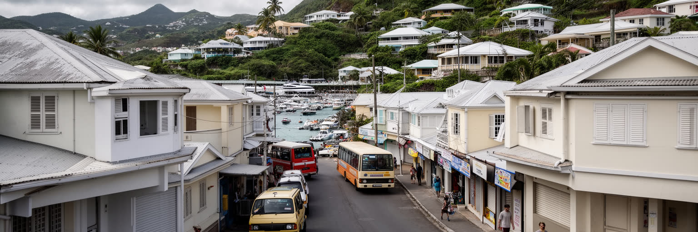
ヴィクトリアの暮らしは、海と山が近い美しさの中で、土地の少なさと輸入依存に向き合う。市街地の平地は限られ、住宅は山腹や周辺地区へ広がり、道路は通勤、買い物、学校、港湾物流、観光車両を同時に受け止める。国全体の所得水準は高く見えるが、食料、燃料、建材、車、家電の多くを輸入に頼るため、生活費は重い。若い世帯は住まいの確保、住宅ローン、賃貸料、通勤、保育、教育費に悩み、低所得層には市場価格や公共料金の変化がすぐ響く。島の小さな社会では、家族や近所の助け合いが重要だが、それだけで住宅不足や物価高を解決できるわけではない。山腹の開発は眺望を生む一方、斜面災害、排水、道路整備、救急アクセスの課題を伴う。観光や外資が土地需要を高めると、住民が使える住宅地や海辺の公共空間は狭まりやすい。ヴィクトリアの生活を読むには、リゾートの価格ではなく、住民が毎週どこで買い物をし、どの道で通勤し、雨の日にどれだけ安全に移動できるかを見る必要がある。都市の豊かさは、海の美しさだけでなく、働く人が首都に住み続けられる条件に表れる。公営住宅、斜面排水、バス停、歩道、地域診療、学校の配置は、観光施設ほど目立たないが生活の質を決める。小さな島都では、住宅政策と環境政策を切り離せない。生活の安定は、景観の価値を支える基盤でもある。
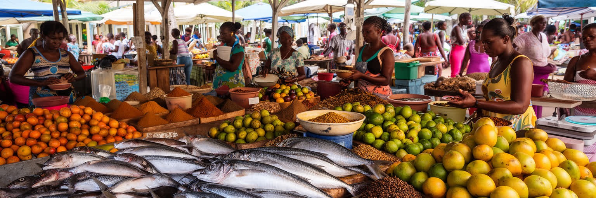
ヴィクトリアの市場は、首都の日常を最も濃く見せる場所である。魚、果物、野菜、香辛料、花、土産物、家庭用の品が並び、住民、料理人、観光客、運転手、店主が朝から行き交う。島国の食は海に支えられるが、すべてが地元で賄えるわけではない。魚は重要なタンパク源であり、カレー、チャツネ、ココナツ、パンノキ、米、輸入食材が家庭の食卓を作る。市場の値段は天候、漁獲、輸入コスト、観光需要、物流に左右され、家計の感覚を直接映す。売り手にとっては、冷蔵、衛生、水、日陰、廃棄物処理、交通整理が仕事の条件になる。旅行者が市場を歩く時、色鮮やかな売り場だけでなく、夜明け前の仕入れ、魚を運ぶ労働、家族経営の計算、価格交渉を見ることが大切だ。食文化は観光の魅力であると同時に、住民の健康、収入、海洋資源の管理とつながる。過剰漁獲や海の温暖化、輸入食品の増加は、味の記憶にも影響する。市場を守ることは古い風景を保存することではなく、地元の食を手ごろに保ち、小商人が働き続けられる都市の仕組みを整えることである。ここでは海、農地、港、家庭が一つの広場で結び直される。魚を選ぶ会話や香辛料の量り売りは、観光客には小さな風景でも、住民には家計と季節を読む情報である。市場の信頼は、都市の食料安全保障そのものでもある。食の小さな流通は、島の自立を測る物差しになる。
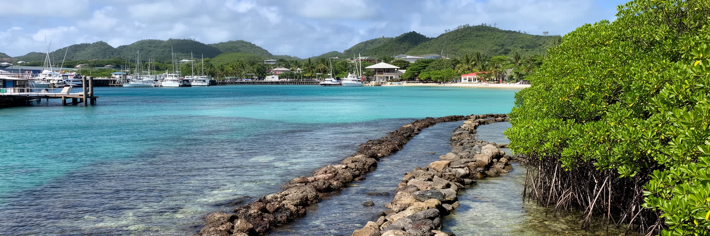
ヴィクトリアにとって海は背景ではなく、国家の資産であり脆弱性でもある。港、漁業、観光、海洋公園、珊瑚礁、マングローブ、海岸道路、排水路は互いにつながり、陸上の選択が水質と生態系に反映される。セーシェルは海洋保護で国際的に知られるが、首都の成長は廃水、プラスチック、港湾活動、建設土砂、船舶燃料、観光施設の負荷を生む。気候変動は海面上昇、高潮、強い雨、珊瑚の白化、水不足、暑さとして現れ、小さな島の選択肢を狭める。ヴィクトリアの排水溝が詰まれば雨水は道路と市場へ流れ、海へ汚れを運ぶ。山腹の開発で土砂が流れれば、湾の透明度と珊瑚にも影響する。環境政策は遠い自然保護ではなく、漁師、ホテル、港湾労働者、住民の健康、観光収入を守る都市政策である。海岸を美しく見せるだけでは足りない。ごみ収集、下水、建築規制、港湾管理、教育、海洋監視を日常の制度として続ける必要がある。ヴィクトリアの価値は、海を売る都市ではなく、海を使いながら傷めない方法を学ぶ都市であり続けられるかにかかっている。美しい湾は、首都の倫理を映す鏡でもある。学校の環境教育、漁業者の知識、観光業者の運用、港湾の規制が重なる時、保護は理念から実務へ移る。海を守る責任は行政だけでなく、都市の消費と移動の仕方にも広がる。その積み重ねが、観光の価値も守る。
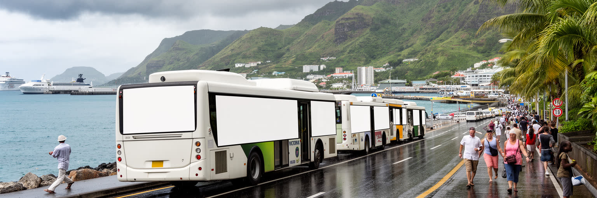
ヴィクトリアの交通は、距離が短いから簡単だとは言えない。市街地、港、空港、リゾート、山腹住宅、学校、官庁、市場を結ぶ道路は限られ、朝夕の通勤、観光バス、貨物車、タクシー、自家用車、歩行者が同じ回廊を使う。マヘ島の地形は山が海へ迫るため、道路を大きく増やす余地は少なく、渋滞や駐車不足は首都の日常的な課題になる。公共バスは住民の移動を支えるが、運行頻度、待合環境、歩道、雨の日の安全が生活の質を左右する。港や空港へのアクセスが滞れば、観光客の移動だけでなく、輸入品、医療、行政、島間交通にも影響する。小さな都市では、一つの交差点や橋の不具合が多くの機能を止める。歩いて楽しめる中心部を守ることは、観光にも住民にも利点があるが、暑さ、雨、坂道、交通量を考えた街路整備が必要だ。ヴィクトリアの交通政策は、自動車を速く流すだけではなく、港湾物流を確保しながら、子ども、高齢者、観光客、低所得世帯が安全に動ける都市を作る課題である。島内の短い移動を公平に設計できるかが、首都の使いやすさを決める。雨季の排水、バス停の日陰、港湾車両の時間管理、歩行者横断の安全は小さな改善に見えるが、毎日の負担を確実に減らす。交通は観光の便利さではなく、住民の時間を守る制度でもある。短い道の質が、首都全体の公平性を左右する都市だ。
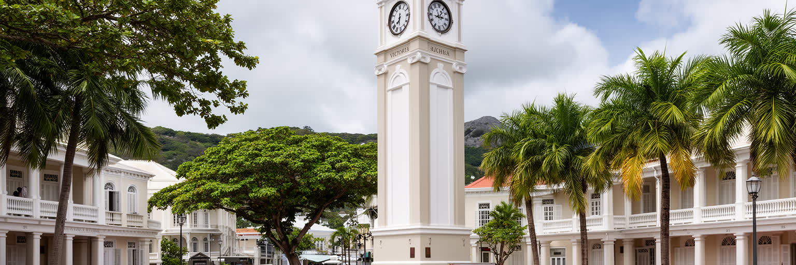
ヴィクトリアの街路には、フランスと英国の植民地支配、奴隷制、プランテーション、解放後の労働、インド洋交易、独立国家への移行が重なっている。時計塔や旧行政建築は写真に収まりやすいが、その背後には土地所有、労働、言語、宗教、教育制度の歴史がある。セーシェルには先住民社会がなく、入植、奴隷、解放奴隷、商人、移民の流れによって社会が形成された。だから首都の歴史を語る時、南国の小さな英国風都市という表面だけでは足りない。誰が土地を管理し、誰が働き、誰の言葉が学校や裁判で使われ、誰の記憶が観光の物語に残ったのかを問う必要がある。独立後のヴィクトリアは、国民国家の制度を整え、クレオール語と文化を公共の中心へ押し出し、観光と海洋資源を軸に経済を作ってきた。歴史的建物や博物館は、過去を飾るだけではなく、島社会が自分の成り立ちを説明する場である。都市が再開発されるほど、古い建築、墓地、教会、市場、街路名の意味を残す努力が重要になる。ヴィクトリアの小さな中心部は、インド洋の植民地史を凝縮した教科書でもある。歩くことは、独立の意味を日常の空間で読み直す行為になる。学校や博物館がこの歴史を住民の言葉で伝えれば、観光客向けの説明を超えて、若い世代が自分たちの社会を理解する手がかりになる。保存は建物だけでなく、語りの継承でもある。
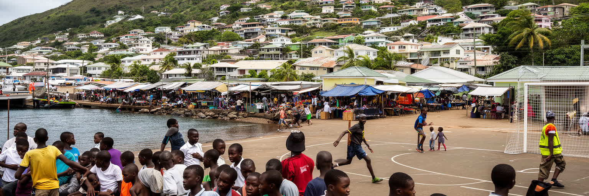
ヴィクトリアの若者は、観光、行政、港湾、漁業、金融、教育、海外留学、デジタル仕事の間で将来を探している。国の所得指標はアフリカの中で高いが、それはすべての若者が十分な住まいと仕事を得られることを意味しない。島の市場は小さく、専門職の席は限られ、観光や港湾の仕事は景気、航空便、燃料費、災害に左右される。生活費が高い都市で独立するには、家族の支援、教育、資格、移動手段が重要になる。小さな社会では人間関係が支えにもなるが、噂や閉塞感、進路の狭さを感じる若者もいる。薬物、家庭内の問題、メンタルヘルス、所得格差、外国人労働者との競争、ジェンダーの期待は、観光地の明るい印象の陰で続く課題である。学校、スポーツ、教会、文化活動、海洋保護、起業支援が、若者の居場所と技能を広げる。ヴィクトリアが将来も首都として強いには、若い世代が島を出るか残るかだけでなく、戻って働き、公共生活へ参加できる回路が必要だ。小さな都市だからこそ、一人ひとりの技能と信頼が社会全体へ響く。若者の選択肢は、海に囲まれた国の開放性を測る指標である。職業訓練が港、観光、環境管理、情報技術と結びつけば、小さな市場でも専門性を育てられる。若者を消費者や労働力としてだけでなく、島の制度を更新する担い手として扱うことが重要だ。参加の場が増えるほど、都市への信頼も育つ。
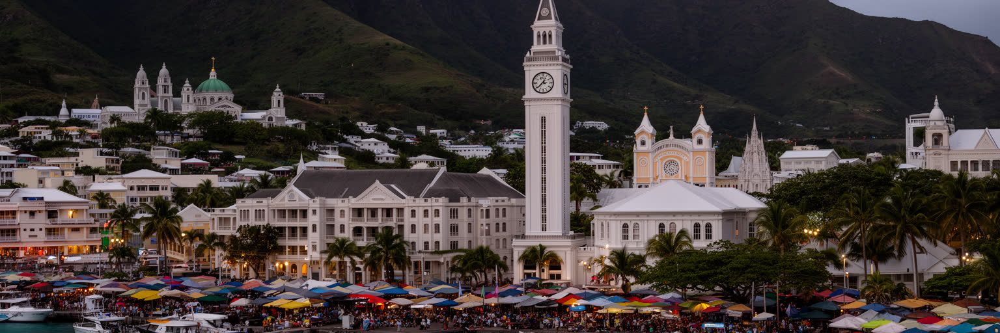
ヴィクトリアは、世界の大都市のような人口や高層ビルで重要性を示す都市ではない。むしろ、国土の小ささと海域の広さ、観光の豊かさと生活費の高さ、クレオール文化の柔らかさと植民地史の重さ、海洋保護の理想と港湾経済の現実が、狭い中心部に集まる点に意味がある。時計塔の周辺を歩けば、官庁、市場、教会、寺院、港、バス、店、山腹住宅がすぐ現れ、国家と日常の距離が近いことが分かる。セーシェルは美しいリゾートとして語られやすいが、ヴィクトリアを読むと、観光の背後にある輸入物流、マグロ加工、公共交通、住宅、若者の仕事、廃棄物、気候変動、海洋外交が見えてくる。小さな首都は、外からの期待を受け止めながら、住民の暮らしを守らなければならない。都市の強さは、豪華な海辺ではなく、海を守り、港を動かし、文化を伝え、生活費に耐え、若者が将来を描ける制度を作れるかに表れる。ヴィクトリアをインド洋の地図に置くと、小国の首都がどれほど多くの世界的課題を背負っているかが見えてくる。ここでは一つの市場、一つの岸壁、一つの排水路が、島国の未来へつながっている。小ささは弱さだけでなく、課題同士の関係を見えやすくする条件でもある。港を直せば物価と環境が動き、観光を伸ばせば住宅と水需要が動く。その連鎖を読むことが、ヴィクトリアを理解する近道になる。